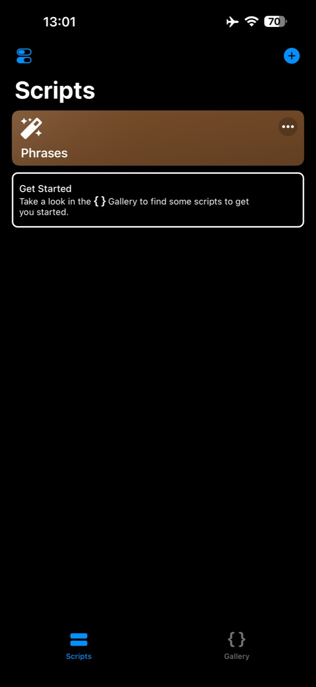
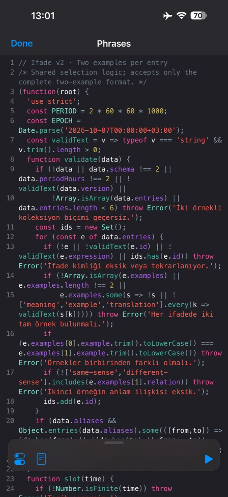
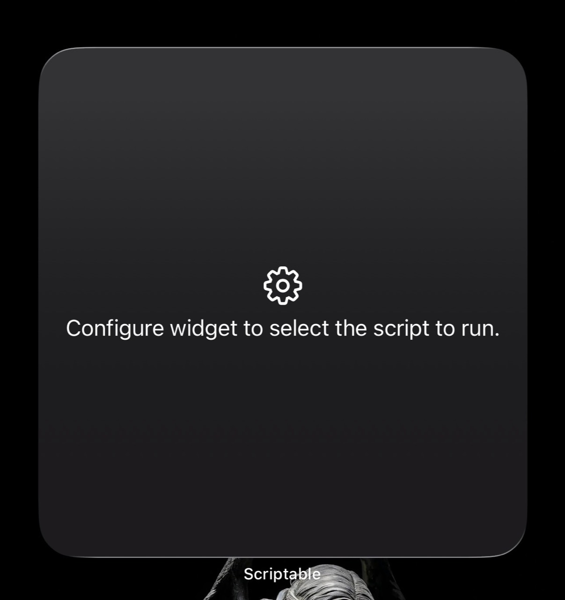
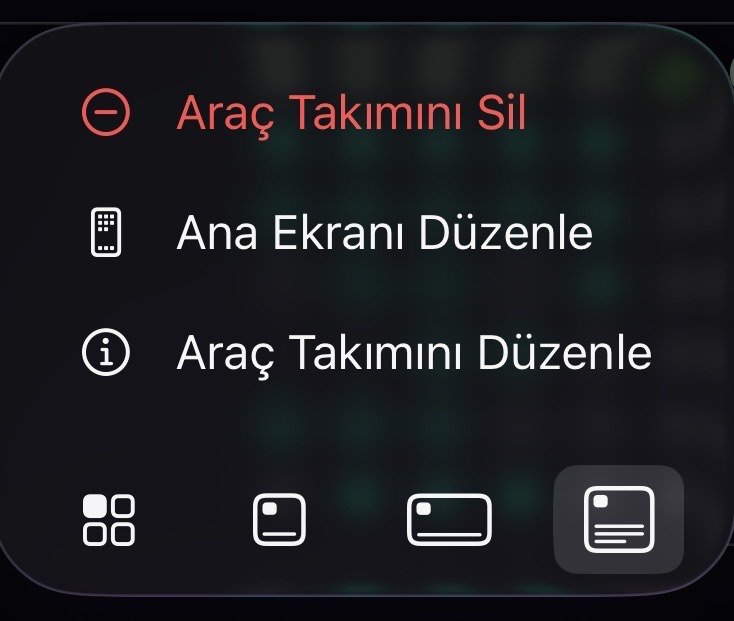
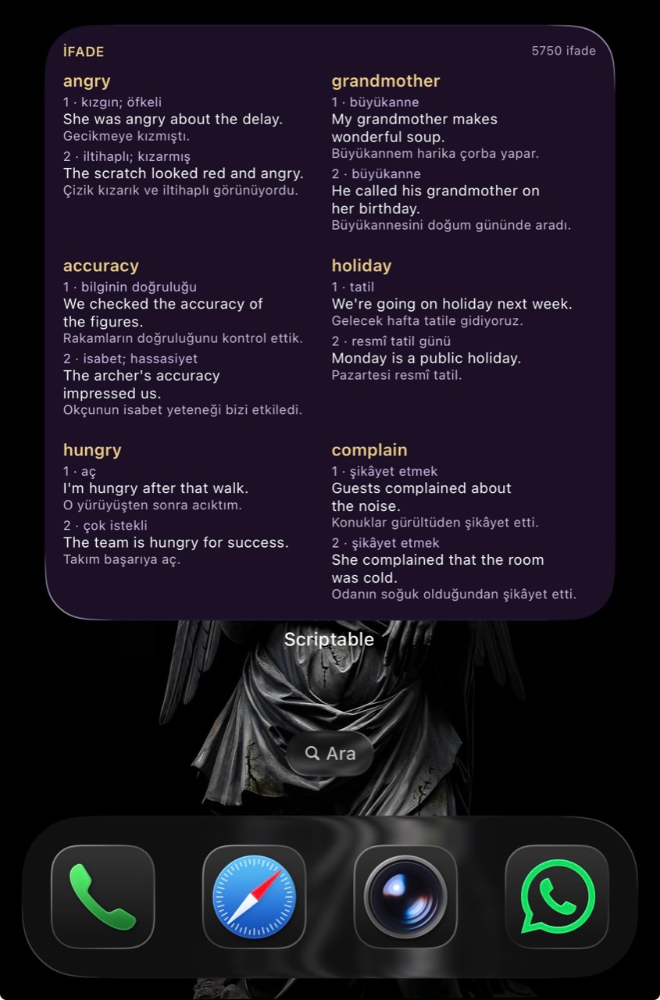

1. Kodu kopyala, Scriptable’ı aç
Ana sayfada Widget kodunu kopyala düğmesine bas. Scriptable’da ilk kurulum için sağ üstteki + düğmesini kullan. Phrases zaten varsa kartın sağ üstündeki … düğmesiyle düzenle.

GERÇEK IPHONE EKRANLARIYLA
Scriptable ücretsizdir. App Store’dan indir. Mevcut Phrases’ı güncelliyorsan ilk iki adım yeterli.
Ana sayfada Widget kodunu kopyala düğmesine bas. Scriptable’da ilk kurulum için sağ üstteki + düğmesini kullan. Phrases zaten varsa kartın sağ üstündeki … düğmesiyle düzenle.

Yeni betiğe kodu yapıştır; örnekteki gibi Phrases adını verebilirsin. Mevcut Phrases’ı güncelliyorsan kodun tamamını değiştir ve adını koru. Sağ alttaki mavi ▶ ile çalıştır. Önizlemeyi kapat, Done ile editörden çık.

Ana ekranda boş yere uzun bas → Düzenle → Araç Takımı Ekle / Widget Ekle → Scriptable. Büyük kare boyutunu seç. Aşağıdaki yazı hata değildir: widget henüz çalıştıracağı betiğe bağlanmamıştır.

Widget’a uzun bas ve Araç Takımını Düzenle seç. Açılan ayarlarda Script → Phrases seçip ana ekrana dön. Betiğe İfade adını verdiysen aynı alanda İfade’yi seç. Menü adı bazı sürümlerde Widget’ı Düzenle olabilir.

Altı ifade ve her birinde iki örnek görünür. Widget’a dokununca site açılması normaldir. Mevcut kurulumunu yalnız güncelliyorsan 3 ve 4. adımları tekrarlamana gerek yok.
